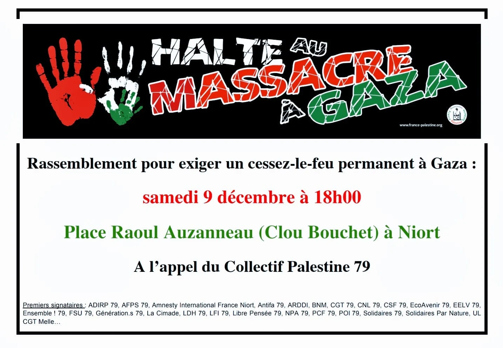

Appel relayé
À Niort, rassemblement pour Gaza annoncé au Clou-Bouchet le 9 décembre
Date indiquée par Facebook · 8 décembre 2023
Repères éditoriaux
Le Collectif Palestine 79 donnait rendez-vous samedi 9 décembre à 18 h place Raoul-Auzanneau, dans le quartier du Clou-Bouchet.
Texte conservé avec la publication
Rassemblement à #Niort samedi 9 décembre à 18h place Auzanneau dans le quartier Clou Bouchet à l'appel du Collectif Palestine 79, pour un cessez-le-feu permanent.
Le 7 décembre Israël a tué lors d'un bombardement l'écrivain et poète palestinien Refaat al-Areer, grande voix de Gaza.
Plus de 17000 Palestiniens ont péri dont près de 60% d'enfants, sans compter ceux qui se trouvent encore sous les décombres.
Netanyahou n'est pas rassasié?

Sources
Archive rouge · export Facebook · AR-0002-FB-01525
À lire aussi · À Niort, le rassemblement du 25 octobre pour la paix en vidéo · Le lien d’origine